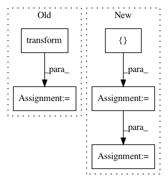

dfd23ba635f59f0dbc2c0cdf04445e5f6eda3c66,AutoSklearn/autosklearn.py,AutoSklearnClassifier,fit,#AutoSklearnClassifier#Any#Any#,84
Before Change
self._preprocessor = components.preprocessing_components.\
_preprocessors[preproc_name](random_state=random_state, **preproc_params)
self._preprocessor.fit(X, Y)
X = self._preprocessor.transform(X)
self._estimator.fit(X, Y)
return self
After Change
// TODO: can this happen now that a configuration is specified at
// instantiation time
steps = []
preprocessor = self.configuration["preprocessor"]
if preprocessor.value != "None":
preproc_name = preprocessor.value
preproc_params = {}
for instantiated_hyperparameter in self.configuration:
if not instantiated_hyperparameter.hyperparameter.name \
.startswith(preproc_name):
continue
if isinstance(instantiated_hyperparameter,
InactiveHyperparameter):
continue
name_ = instantiated_hyperparameter.hyperparameter.name. \
split(":")[1]
preproc_params[name_] = instantiated_hyperparameter.value
preprocessor_object = components.preprocessing_components. \
_preprocessors[preproc_name](random_state=self.random_state,
**preproc_params)
steps.append((preproc_name, preprocessor_object))
// Extract Hyperparameters from the configuration object
classifier_name = self.configuration["classifier"].value
classifier_parameters = {}
for instantiated_hyperparameter in self.configuration:
if not instantiated_hyperparameter.hyperparameter.name.startswith(
classifier_name):
continue
if isinstance(instantiated_hyperparameter, InactiveHyperparameter):
continue
name_ = instantiated_hyperparameter.hyperparameter.name.\
split(":")[1]
classifier_parameters[name_] = instantiated_hyperparameter.value
classifier_object = components.classification_components._classifiers\
[classifier_name](random_state=self.random_state,
**classifier_parameters)
steps.append((classifier_name, classifier_object))
self._validate_input_X(X)
self._validate_input_Y(Y)
self._pipeline = Pipeline(steps)
self._pipeline.fit(X, Y)
return self
def predict(self, X):
In pattern: SUPERPATTERN
Frequency: 4
Non-data size: 5
Instances
Project Name: automl/auto-sklearn
Commit Name: dfd23ba635f59f0dbc2c0cdf04445e5f6eda3c66
Time: 2014-12-11
Author: feurerm@informatik.uni-freiburg.de
File Name: AutoSklearn/autosklearn.py
Class Name: AutoSklearnClassifier
Method Name: fit
Project Name: instacart/lore
Commit Name: f863a6804ba1f46c3f216c6ba75b642b9b61ad17
Time: 2018-02-01
Author: montanalow@users.noreply.github.com
File Name: lore/pipelines/holdout.py
Class Name: Base
Method Name: encode_x
Project Name: dirty-cat/dirty_cat
Commit Name: ff8dccc29edca64877b3cef1b53c7958ce321f76
Time: 2018-03-14
Author: patricio.cerda@inria.fr
File Name: dirty_cat/test/test_similarity_encoder.py
Class Name:
Method Name: test_similarity_encoder
Project Name: undertheseanlp/underthesea
Commit Name: cf98094a2b174b5df0cab0ad0a02c0f82f6ab29e
Time: 2017-10-10
Author: brother.rain.1024@gmail.com
File Name: underthesea/word_sent/model.py
Class Name: CRFModel
Method Name: predict